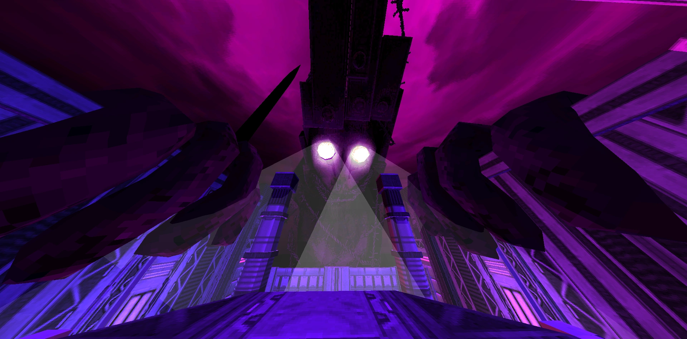

A história do ULTRAKILL une a história, os ambientes e a jogabilidade do jogo, o que cria um mundo em torno do que o jogador vivencia ao longo do jogo. Atualmente, não se sabe muito com certeza e a ordem em que os eventos ocorrem não é clara. Conforme mais informações forem encontradas, esta página será atualizada de acordo. (É possível que atualizações futuras possam mudar a história que conhecemos, pois o jogo ainda está em desenvolvimento.)
Assim como as outras máquinas invasoras, V1 entra no Inferno através da instalação de mineração, em uma área subterrânea conhecida como "Boca do Inferno". Ele luta contra os guardiões do Inferno , destrancando os portões do Inferno propriamente dito, e entra na primeira camada, Limbo. Passando por ela, V1 acaba lutando contra V2 , uma máquina protótipo assim como V1, que escapa após perder um de seus braços em batalha. V1 então desce para Luxúria, a próxima camada. Aqui, ele viaja pelas pontes e ruas da cidade, e eventualmente mata o Cadáver do Rei Minos.

Em seguida, V1 entra em Gluttony e encontra Gabriel , que o ordena a voltar e deixar o Inferno. V1 ignora a ameaça e prossegue para derrotar Gabriel em batalha. Em um acesso de raiva, ele se teletransporta para longe, avisando V1 que "isso não acabou".
Após perder para V1, Gabriel se teletransporta para o Céu, onde é julgado por sua derrota pelo Conselho Sagrado. O Conselho assume que Gabriel deve ter se perdido, pois um anjo que controla o poder de Deus não deve ser abalado por uma mera máquina, e então o considera um traidor. Como punição, o Conselho corta a Luz Sagrada de Gabriel dele, dando a ele 24 horas para matar V1 e tê-la de volta, ou morrer.
Desenvolvedores de ULTRAKILL
Arsi Patala, também conhecido como Hakita , é o criador, principal desenvolvedor e compositor do ULTRAKILL, sediado na Finlândia
PITR é um programador que trabalha em ULTRAKILL junto com Hakita. Se você olhar o código do jogo e vir algo bem feito, provavelmente é por ele.
onde começar a programar?
🚀 Aprenda HTML e CSS com o Professor Guanabara!
Se você quer aprender HTML e CSS de forma fácil, divertida e totalmente gratuita, o curso do Professor Gustavo Guanabara é a escolha certa! 🎓💻
Com uma didática envolvente e uma abordagem passo a passo, o Guanabara ensina desde os conceitos mais básicos até técnicas avançadas, ajudando iniciantes a darem seus primeiros passos no desenvolvimento web. O curso é 100% gratuito, conta com vídeo-aulas bem explicadas, materiais de apoio e exercícios práticos para garantir que você realmente aprenda.
🌟 Por que escolher o Curso em Vídeo de HTML e CSS?
✅ Explicações claras e objetivas
✅ Conteúdo atualizado e estruturado
✅ Exercícios para fixação do aprendizado
✅ Comunidade ativa para tirar dúvidas
✅ Acesso gratuito e de qualidade
Se você deseja criar sites incríveis, entrar para o mundo da programação ou até mesmo seguir carreira como desenvolvedor web, o Curso de HTML e CSS do Professor Guanabara é o ponto de partida perfeito!
🎥 Acesse agora: cursoemvideo.com
Não perca essa oportunidade! Aprenda com um dos melhores professores da área e domine a base da criação de sites. 🚀✨